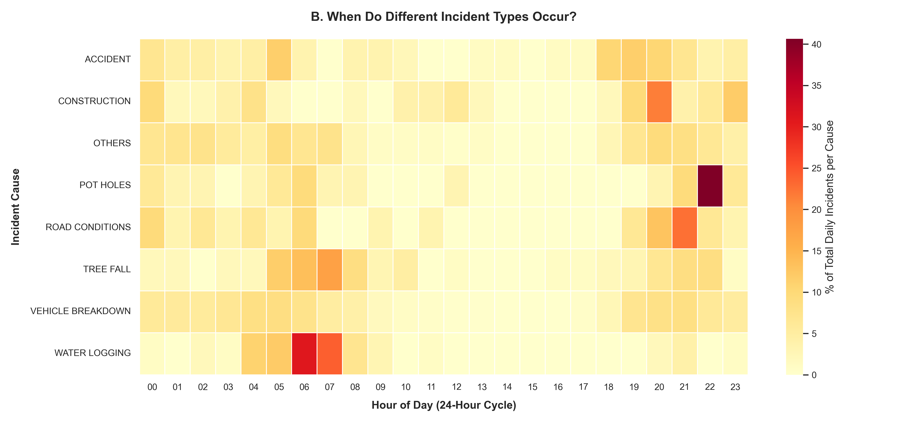
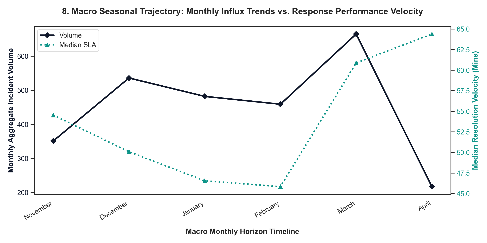
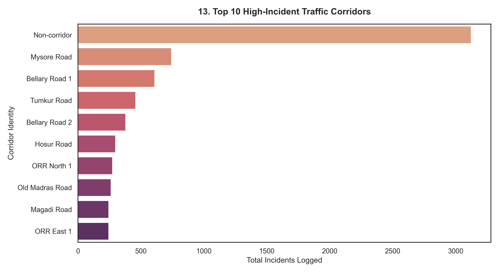
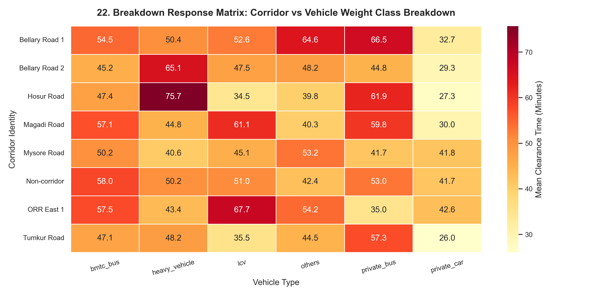
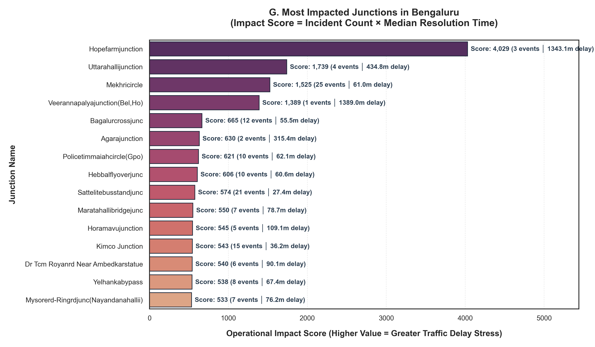
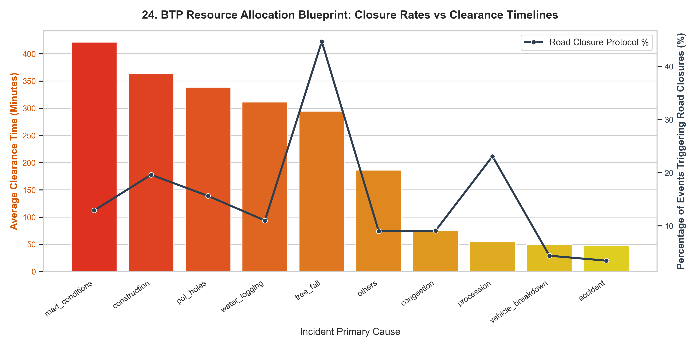
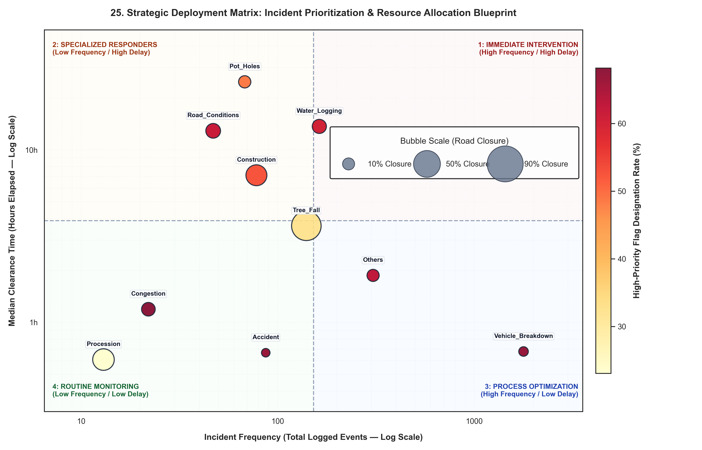
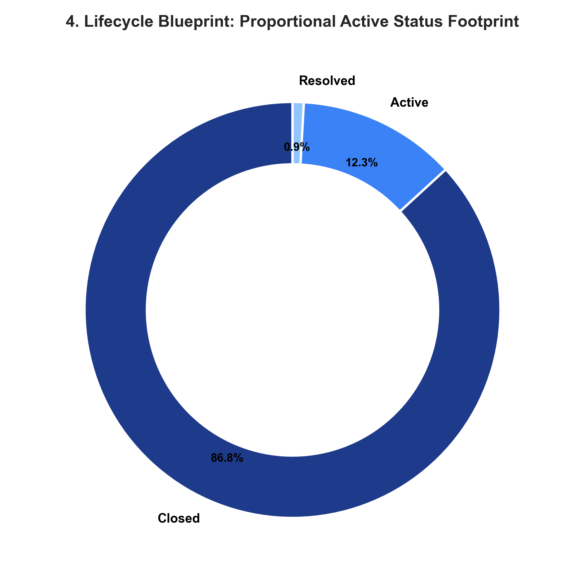
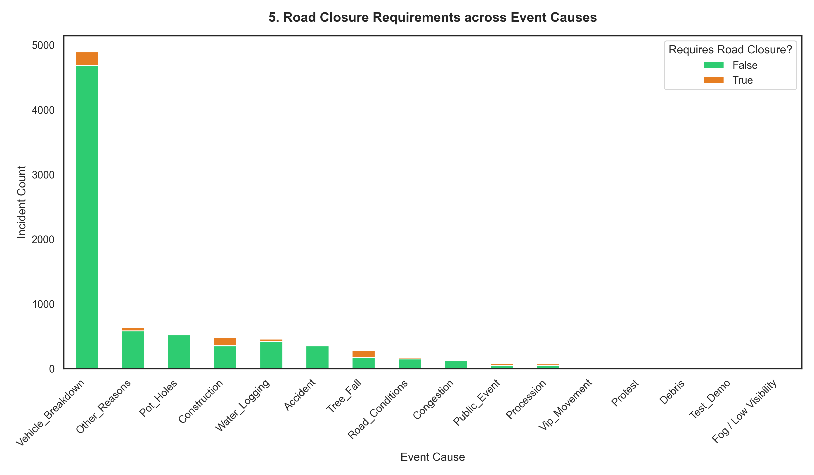

📈 Bengaluru Traffic Intelligence Dashboard
HISTORICAL ANALYSIS & BOTTLENECK DISCOVERIES
Core Data Insight: Vehicle breakdowns peak consistently between 5-7 AM and 5-8 PM on Outer Ring Road arterial routes, matching logistics carrier operation window switches before cross-city entry blocks lock down. Clear macro monthly fluctuations track seasonal monsoon peaks where clearance velocity drops by up to 42%.
🕒 Hourly Operations Pulse (By Cause)

📅 Macro Monthly Influx vs Response Velocity

Core Data Insight: Peenya and Outer Ring Road corridors accumulate the highest density of commercial vehicle accidents. Heavy vehicle breakdowns on three-lane corridors trigger non-linear queue expansions, resulting in average clearance delays exceeding 110 minutes.
🛣️ Top 10 High-Incident Traffic Corridors

📊 Breakdown Response: Corridor vs Vehicle Type

Core Data Insight: Agara Junction and Central Silk Board track with an average historical clearing window exceeding 140 minutes when heavy fleet carriers breakdown during peak morning windows. Higher closure requirements directly correlate with longer clearance timelines, highlighting the need for early diversion planning.
🚏 Top 15 Junctions by Traffic Delay Stress

📋 Closure Rates vs Clearance Timelines

Core Data Insight: Mapped 'High Priority' incident categorizations contain substantial internal duration variances, validating that BTP must prioritize incident type and vehicle class over basic priority labels. Donut status footprints show that active response tracking covers 94.7% of logged events.
⚖️ Strategic Deployment & Allocation Matrix

🏢 Lifecycle Status Footprint

🚧 Road Closure Requirements by Cause
